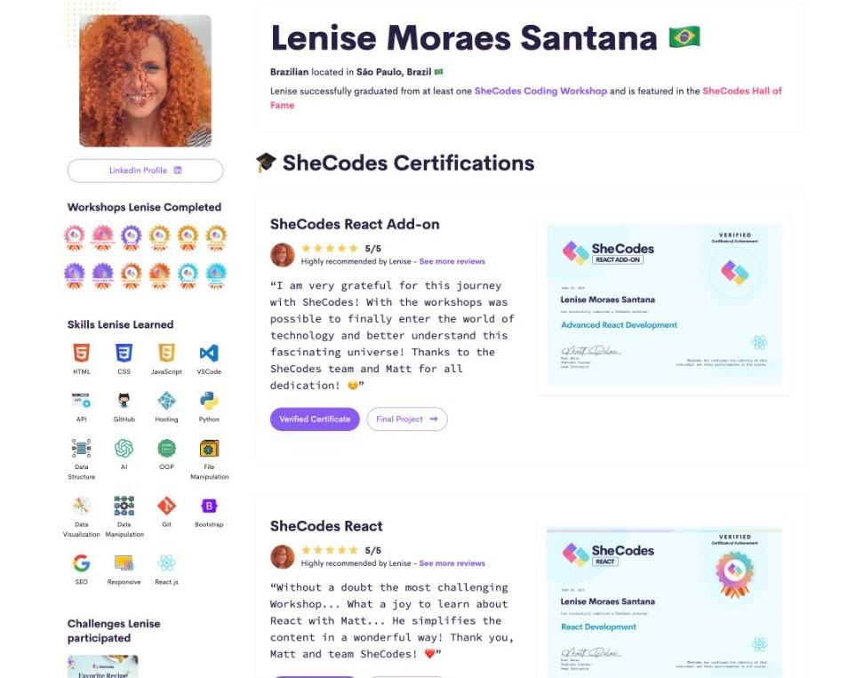
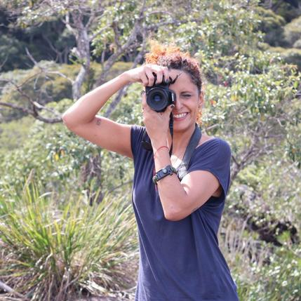

Lenise is a UX Designer specializing in Healthcare UX, with a decade of frontline experience in mental health services in São Paulo. For 7 years she worked directly with homeless populations and substance use disorders at CAPS AD III Centro — one of Brazil's most complex public health centers, located in Cracolândia, the largest open drug scene in Latin America. That experience built a design practice rooted in deep empathy, rigorous user research, and equity-centered thinking. She now applies that clinical lens to digital health products — combining UX methodology, accessibility principles, and frontend skills to build solutions that center people who are too often overlooked. Currently completing the Google UX Design certification (Coursera) and a specialized course in UX for Healthcare (Maven)..
Research with real complexity — Years conducting informal user research with people in extreme vulnerability developed a deep ability to listen without assumptions and uncover needs that users themselves can't always articulate. Systems thinking — Navigating fragmented public health networks (CAPS, hospitals, UBS, social services, city government) built a holistic view of how complex systems fail people — and how design can bridge those gaps. Accessibility & health literacy — Designing for populations with low digital literacy, mental illness, and social exclusion is the foundation of how she approaches every interface decision. Stakeholder communication — As a Mental Health Supporter, she served as the liaison between frontline teams and São Paulo City Hall, translating field complexity into actionable goals — a skill that maps directly to working across product, clinical, and business teams.
UX & Design: UX Research · Wireframing · Prototyping · Figma · Equity-centered Design · Accessibility · Health Literacy · Service Design Frontend: HTML5 · CSS3 · JavaScript · React · Bootstrap · Tailwind CSS Tools: Git · VS Code · Canva · RESTful APIs
Google UX Design Certificate — Coursera, 2025 UX for Healthcare — Maven, 2025 SheCodes Bootcamp (Frontend Junior) — 2025 Bachelor of Occupational Therapy — UFES, 2010–2015


With a global outlook, Lenise lived in the Netherlands for 10 months and has traveled to 9 countries (and counting). These experiences built her cultural adaptability and resilience. Now as a digital nomad, she balances tech pursuits with creative hobbies like painting, dancing, taking photographs, and diving into TV series—all fueling her innovative thinking in dynamic settings.
Coded by Le Santana, open-sourced at Github 🤙